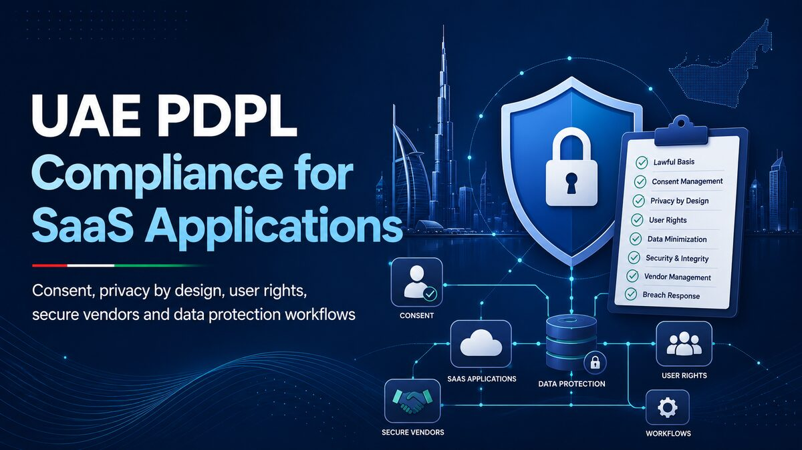

Published · 10 min read
UAE PDPL Compliance Checklist for SaaS Applications

UAE PDPL compliance for SaaS applications is not something a team can solve by copying a privacy-policy template. A product serving customers in Dubai, Abu Dhabi, Sharjah or elsewhere in the UAE may collect names, email addresses, payment references, employee records, support messages, usage events and device information. The engineering team needs to know why each field exists, who can access it, where it travels and how it can be corrected or deleted.
The federal Personal Data Protection Law, Federal Decree-Law No. 45 of 2021, creates a framework for protecting personal data in the UAE. The official UAE portal describes requirements around lawful processing, security, confidentiality, individual rights and cross-border transfers. Separate regimes may apply in financial free zones such as Abu Dhabi Global Market, so a company must first identify which rules govern its entities and processing activities.
I build multi-tenant SaaS products with authentication, role-based access, billing, integrations and audit trails. Those engineering foundations are directly relevant to privacy: tenant isolation limits exposure, explicit data models make retention manageable, and reliable background jobs turn deletion or export requests into controlled workflows. This guide applies that production experience to the official requirements without presenting legal advice or claiming that software controls alone guarantee compliance.
Use this UAE PDPL compliance checklist to start a conversation between engineering, security, operations and qualified legal advisers before launching or expanding a SaaS platform in the UAE.
Start UAE PDPL compliance with a real data inventory
A team cannot protect data it does not know it holds. Begin by mapping every personal-data flow from collection to deletion. Include the marketing website, signup form, product database, payment provider, analytics, customer-support tools, email platform, error monitoring, backups, file storage and AI services.
For each data element, record the purpose, source, lawful basis confirmed by advisers, system owner, storage location, recipients, retention period and deletion method. Separate personal data from anonymous operational metrics. Replacing a name with an internal ID does not automatically make data anonymous if the organisation can reconnect that ID to a person.
Identify the controller and every processor
In simple terms, a controller determines why and how personal data is processed, while a processor handles it on the controller's behalf. A SaaS company may act as a controller for its employees and sales leads, but as a processor for customer records uploaded by business clients.
Document these roles for each workflow instead of assigning one label to the whole company. Review contracts with hosting, email, analytics, payment, support and AI vendors. A subprocessor list should reflect the services actually enabled in production, not every vendor the company once tested.
Do not confuse UAE data residency with complete compliance
Hosting in a UAE cloud region can support contractual or sector-specific location requirements and reduce latency. AWS, for example, offers the Middle East (UAE) region and says customers choose where their content is stored. However, choosing a UAE region does not automatically satisfy every privacy obligation.
Application logs may still go to another region. Support staff may access data from another country. Email, analytics, backups or AI APIs may process information elsewhere. Trace the complete path and assess cross-border transfers with legal advisers. “Our database is in the UAE” is not a complete data map.
Build consent and transparency into the product
The UAE's official legislation states that personal data must be processed fairly, transparently and lawfully, collected for a specific and clear purpose, and not later used in a way that conflicts with that purpose. Consent is important, but it is not a generic checkbox that authorises every future use. The law also describes situations where processing may be permitted without consent, so the correct basis should be decided for each activity.
The interface should explain what data is collected, why it is needed, who receives it and how the person can exercise their rights. Keep the language plain. If Arabic and English audiences use the product, make important notices understandable in both languages and keep their meaning aligned.
Store consent as evidence, not a boolean
A field such as marketingConsent: true is rarely enough. Store what the user agreed to, the notice or terms version, timestamp, channel, relevant purpose and withdrawal time. Separate optional marketing consent from acceptance required to perform the service.
type ConsentRecord = {
userId: string
purpose: 'product_updates' | 'marketing_email'
status: 'granted' | 'withdrawn'
noticeVersion: string
capturedAt: string
withdrawnAt?: string
source: 'signup' | 'settings' | 'support'
}
async function withdrawConsent(userId: string, purpose: string) {
await consentStore.withdraw(userId, purpose)
await marketingQueue.removePendingMessages(userId, purpose)
await auditLog.record('consent.withdrawn', { userId, purpose })
}The code illustrates a product pattern, not a legal conclusion. Withdrawing consent should affect downstream systems too. Updating the SaaS database while leaving the contact active in an email platform does not complete the workflow.
Reject dark patterns
Do not preselect optional consent, hide refusal behind extra screens or combine unrelated purposes into one choice. A user should be able to understand the consequence of accepting or refusing. Record the choice consistently across web, mobile and support-assisted journeys.
Cookie banners also need product decisions. Categorise essential and optional technologies, block optional trackers until the approved condition is met, and make preferences changeable. Do not claim “we use no cookies” if authentication, analytics or chat tools set them.
Engineer data-subject rights as supported workflows
The federal UAE framework includes rights relating to information, data transfer, correction or erasure, restriction and stopping processing. A privacy inbox with no connection to product systems creates manual risk. Design authenticated workflows for receiving, verifying, tracking and completing requests.
A request may touch the primary database, file storage, search indexes, customer-support tickets, CRM records, analytics profiles and subprocessors. Create a system inventory first, then define what can be changed immediately, what must be retained under another obligation, and what requires review.
Secure data export requests
An export can expose more information than an ordinary screen. Verify the requester's identity, apply tenant and role scope, prevent one user from exporting another organisation's data, and generate the file in a protected background job.
Use a short-lived download link, encrypt the transfer, avoid emailing sensitive attachments, and record who requested and downloaded the export. Rate-limit the endpoint and test for insecure direct-object references by changing user, tenant and export IDs.
Make correction and deletion traceable
Correction should update the authoritative source and trigger necessary downstream synchronisation. Deletion requires more than removing a row visible in the UI. Consider attachments, caches, indexes, analytics identifiers, queued emails, derived profiles and subprocessors.
Some records may need to be retained for legitimate contractual, financial or legal reasons. The product should support restricted retention or anonymisation where advisers approve it, instead of silently ignoring a request or deleting evidence that must be preserved.
Use explicit lifecycle states such as active, deletion_requested, restricted, anonymised and deleted. Keep the privacy audit trail minimal: record the workflow and result without recreating the personal data that was removed.
Apply privacy by design to multi-tenant SaaS
Privacy by design means considering data protection while defining the feature, not after release. Ask whether the feature needs personal data at all, whether fewer fields would work, who needs access, how long the data remains useful and what happens when a customer leaves.
In a multi-tenant platform, every query and storage path must enforce organisation scope. Never rely only on a hidden button or tenant ID sent by the browser. Authorisation belongs in the API and database. This is the same security boundary discussed in my Supabase RLS guide for multi-role applications.
Use least privilege and strong authentication
Give employees and customers only the access needed for their role. Separate production administration from normal support access. Require stronger authentication for exports, identity-link changes, billing controls and bulk operations.
Review dormant accounts, service credentials and API keys. Rotate secrets, keep them outside source control, and ensure test environments do not use copied production data unless a controlled, approved process makes it necessary.
Minimise logs and analytics
Logs are often the least governed copy of customer data. Do not log passwords, access tokens, complete request bodies, identification documents or private conversations. Use correlation IDs and structured error categories instead.
Configure retention for application logs, CDN logs, database audit records and error trackers. Mask personal fields before they leave the application. Give developers the diagnostic information they need without turning every support investigation into unrestricted access to customer content.
Assess high-risk features before launch
The federal law addresses data-protection impact assessment, and ADGM guidance provides a dedicated DPIA process for projects likely to create high risks to individuals. Features involving sensitive data, large-scale monitoring, automated decisions, biometrics or new AI processing deserve structured assessment before development is considered finished.
A useful assessment describes the purpose, data, people affected, necessity, vendors, transfers, threats, possible harm, mitigations, owners and remaining risk. Treat it as a living design record rather than paperwork written after every technical choice is locked.
Manage vendors, AI services and cross-border transfers
A modern SaaS application may use dozens of third parties. Before enabling a service, review what data it receives, its role, processing locations, security controls, retention, subprocessors, deletion behaviour and contract. Give vendors only the minimum fields required.
AI integrations need extra care because prompts can contain support conversations, documents or account context. Do not send production data to a model simply because an API call is convenient. Redact unnecessary identifiers, restrict retrieval by tenant, control whether provider data may be retained, and document the approved use case.
Cross-border transfers should not be guessed from a vendor's homepage. Confirm the actual region and contractual chain. The federal law includes requirements for transfers, while ADGM publishes separate guidance and standard contractual clauses for entities under its regime. Determine the applicable framework before selecting a mechanism.
Prepare a practical SaaS breach-response plan
Prevention is essential, but the company also needs a response process. Define what counts as a suspected personal-data breach, who receives the alert, how access is contained, how evidence is preserved, and who assesses notification duties.
Make vendors part of the process. ADGM guidance, for example, says processors must notify their controller without undue delay after becoming aware of a breach. Contracts and operational contacts should allow the company to receive that information quickly.
Run a tabletop exercise using a realistic scenario: a support account is compromised, a storage bucket is exposed or one tenant receives another tenant's export. Record the detection source, containment steps, affected systems, data categories, decision owners and lessons. Do not wait for an incident to discover that nobody can contact the cloud provider or identify affected users.
UAE PDPL compliance checklist for development teams
- Identify the applicable federal, free-zone and sector-specific regimes.
- Map personal data across the product and every vendor.
- Record controller, processor and subprocessor roles.
- Define a reviewed purpose and lawful basis for each activity.
- Implement clear Arabic and English privacy notices where needed.
- Store versioned consent evidence and propagate withdrawal.
- Build secure correction, export, restriction and deletion workflows.
- Enforce tenant isolation and least-privilege access server-side.
- Minimise personal data in logs, analytics and AI prompts.
- Review retention, backups and account-closure behaviour.
- Assess vendors and cross-border transfers before activation.
- Conduct impact assessments for high-risk processing.
- Maintain and test a personal-data breach response plan.
Practical takeaway
UAE PDPL compliance for SaaS applications is a continuing product capability, not a document uploaded before launch. A trustworthy platform knows what personal data it holds, limits access, records valid choices, supports user rights, controls vendors and can respond when something goes wrong.
Start with the data map and applicable legal regime. Then turn the approved requirements into schemas, permissions, retention jobs, export and deletion workflows, vendor controls and tests. Review the design with qualified UAE privacy counsel, especially for sensitive data, regulated sectors, ADGM operations or international transfers.
Use the official UAE data-protection overview, the full federal PDPL text and the ADGM Office of Data Protection guidance as primary references.
If your UAE company needs a secure multi-tenant SaaS platform, privacy-ready workflow or Node.js integration, contact me to discuss the architecture.
About Muhammad Mustafa
Full-Stack SaaS & AI Engineer with 10+ years of experience building production web applications, multi-tenant platforms, secure integrations and AI-powered products.